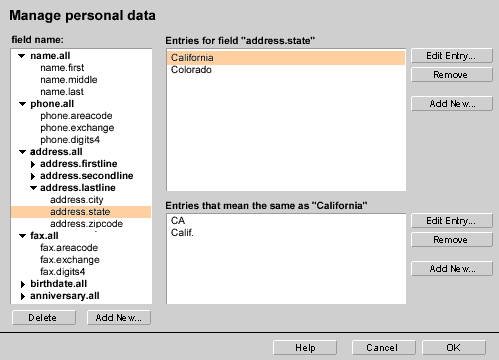

| Navigator Seamonkey |
UI Specification
|
| Navigator QuickFill |
Last
Modification:
|
| Author
German W. Bauer Initial Creation Date: 08 Mar 1999 |
Status: M3 complete revamp after change in direction from server based ecommerce feature to client-side only generalized form fill-in |
|||||||||||||
Quick links:
Design Overview |
Feature Team
|
|||||||||||||
Older spec, will be updated |
Summary/Overview
The QuickFill is a new feature in Seamonkey which will help end-users users
with the repetitive task of filling out forms. The technology on the client
side behind this is described in Steve's algorithms
document.
The older version of the spec is here.
Goals for our end users
- Balance pleasant experience of form filling by convenient re-use of user's personal data with providing a sense of privacy and secure handling of this personal data.
- Give users an easy way to see and manage personal data is stored on their computers
- Generally simple end-user (no-) interface, things 'should do the right thing automatically' when used first. Adding many screens will negatively impact acceptance of technology.
- Take into account that filling forms will be only used in Navigator and only for x% of user's online time, such design so that it does not get in the way of regular Internet browsing.
- Minimize user confusion and keep design orthogonal to server based ecommerce/shopping solutions such as AOL Quick Checkout, which generally lead you to a 'different place'
Target Audience
The target user for this feature are Communicator Seamonkey users as described in the Seamonkey PRD.
User Tasks
Fundamental Tasks Intermediate Tasks Advanced Tasks Fill forms with personal user data
- Change/Update personal data (e.g. when user has new address)
- Turn off automatic filling out of forms
- change password to access QuickFill data
Clear all data stored on computer aka the red button (e.g. when user cannot remember password)
Design Cheat
sheet
Design Details
How Filling a form will work
In order to prevent spoofing in forms (like zero-length fields that would get automatically filled in without the user ever seeing it) as well as letting users select from multiple proposed values, it was suggest to supply a 'preview' that shows each field (or select element) and what is being filled in or selected.
Issues: this dialog can potentially get very big and cover up the page, and since the field names are sometimes not very descriptive is hard for them to see things in context. Also some users may want to do "the green button like on copier" thing, i.e. not being bothered by a preview, that is they want to go ahead and have the form filled anyway.
Designs for Fill Preview (to be decided)
Design A: (lowest cost)
Fill preview is shown as a dialog on top of the form currently being filled out.
Elements that were originally Textfields on the form are shown as select popups, with the most likely fill-in selected and shown, and with other choices also being listed. An additional item "Other..." should be included that lets users get a prompt dialog to fill in a new value which gets added to the values database.
Elements that were originally select popups or lists on the form will also be shown as select popups with the choices filled in that the form provided and the choice selected that matches one of the entries in the user database if there is a match.
Both types of elements should show the field name from the mapped schema such as name.first, to provide at least some explanation of what the field is used for
Pros: Most simple to implement. Quick generation/redraw of dialog. User will recognize this as a preview vs. the real form.
Cons:No context whatsoever is provided to the end user, therefore it's hard to make out which element on the dialog maps to which on the form. Bringing up 'another' dialog may be annoying to some users.
Design B: (simple plus)
Like A, Fill preview is shown as a dialog on top of the form currently being filled out.
Elements that were originally Textfields on the form are shown as text field with a small popup button attached to it, with the most likely fill-in shown in the text field, and with other choices being listed once the popup menu is opened. Users can override the value in the text field with a new value which gets added to the user's values database..
Elements that were originally select popups or lists on the form will be shown as select popups with the choices filled in that the form provided and the choice selected that matches one of the entries in the user database if there is a match.
Both types of elements should show the field name from the mapped schema such as name.first, to provide at least some explanation of what the field is used for.
Pros: Simple to implement. Quick generation/redraw of dialog. Better context information since text fields remain text fields. User will recognize this as a preview vs. the real form.
Cons:It's hard to make out which element on the dialog maps to which on the form. Bringing up 'another' dialog may be annoying to some users. Dialog gets pretty big, and may cover up the form on smaller screens
Design C: (preview with context)
Like A and B, Fill preview is shown as a dialog on top of the form currently being filled out.
To provide the user with context however, we would try to render the dialog with the context of the original form, that is with its background, colors, HTML text etc. Like in design B, we would 'annotate' text fields with popups next to them, in order to provider zero-length spoofs.
Pros: Provides reasonable context information, because rendered inside the pages 'real' context.
Cons: Users may confuse it with the real form. Some portions of the form layout may be covered up by wallet elements like the popups next to text fields. Bringing up 'another' dialog may be annoying to some users.
Design D: (no preview, always direct fill in of forms)
This design would enter the most likely values directly into the form text fields and preselect the 'select' elements for the end user. and highlight. Much like in C, we would place popups next to text fields in order to show their existence (spoof problem), but also to let users see other possible values that can be inserted here.
Pros: Very gecko-like: WYSISWYG Preview=the real thing
Cons: Some portions of the form layout may be covered up by wallet elements like the popups next to text fields. Some users may be concerned with viewing an 'altered' version of the form.
Accessing fill forms
Via toolbar button
positioning it on the main
navigator toolbar
the current plan is that this button appear to the right
of the url field
the current plan is also to let the button completely disappear
when the users does not view content with a form in order to make it more recognizable
when the functionality becomes available. However if this will appear to busy,
we can always just disable the button when not in use.
Alternatives considered earlier
- positioning it on the taskbar
Cons:
the taskbar is reserved for launching apps/services
the task bar will appear in every C5 app, even though QuickFill functionality is relevant to Navigator only at this time
- positioning it on the personal
bar
Cons:
the personal bar reserved for 'going places' in Navigator (therefore it will be used for things like indicating that AOL Quick Checkout is available)
users will not expect an action button there that changes the state of a form
- positioning it on the status
area at the bottom of the screen
Cons:
the status area is reserved for status information
the status area has a lower discoverability, i.e.. users may not notice the appearance of a button
the status area is not usually associated with having action buttons, i.e.. users may not click there
It would be nice to add an implicit update function, that is when the user overrides a pre-filled setting or picks something not in the list of stored data, that we ask the user whether they want to add to this to their personal data for later re-use
Menu Design
QuickFill management functions
Password Access dialog to personal data
This will be invoked every time users want to access personal data in the QuickFill (Question: do we let users set this to remember login throughout one session). This dialog occurs when:
- they invoke form fill
- they need to manage personal data stored on the computer
- change their login/password
Manage Personal Data dialog
Designed to let users inspect and change personal data stored on their computer
HTML mockup:
can
be invoked by clicking here...
The above is a rough mockup based on HTML 3.2, we can make it better looking later using XUL (See illustration below)

It would be nice to add an implicit update function, that is when the user overrides a pre-filled setting or picks something not in the list of stored data, that we ask the user whether they want to add to this to their personal data for later re-use
Open Issues
-
Detecting form elements that could not be filled out: Certain type of form elements can currently not be used with QuickFill such as check boxes and radio buttons. In the case of text fields that have not been filled out (due e.g. to new field names that could be mapped to the QuickFill database), we can provide users with some assistance:
- drawing a colored border around that form element
- using a different background color/style for that form element
- placing/overlaying a prompter image (e.g. arrow) pointing to that form element
In addition (or as a low-cost alternative) we can provide a more generalized way to key-navigate to 'the next empty' form text field.
Other
Context Menus
None planned at this point
Preferences
In trying to keep things simple we are hoping to only have one global preference, and that is turn QuickFill features on or off.Error Messages and Dialogs
Condition Message User Choices
Archived Documents
Examples of special formatting:
Revisions
Rev 1: first stab, based on UI design docs on PM feedback
> Rev 2: complete revamp based on the fact that we are now focusing on a client-only form fill functionality
Special Notes
|